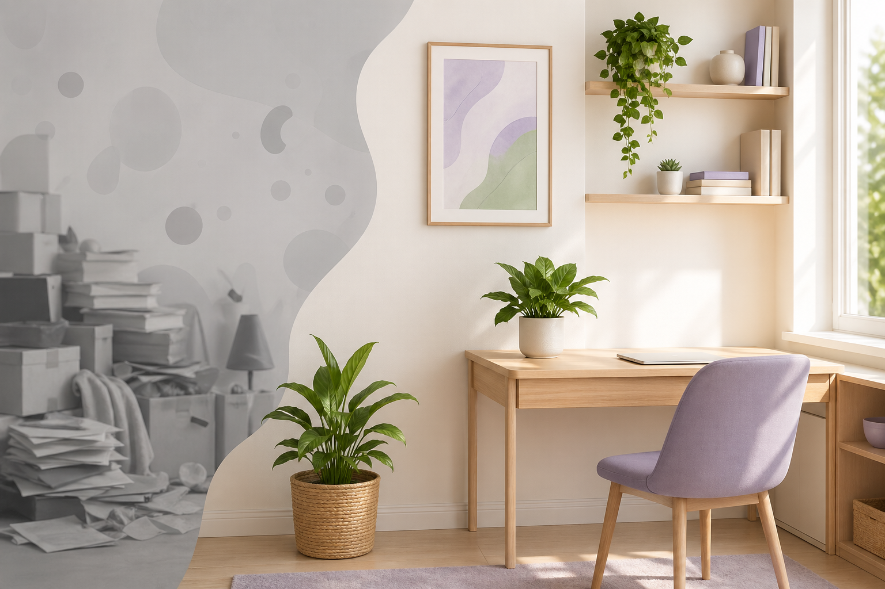
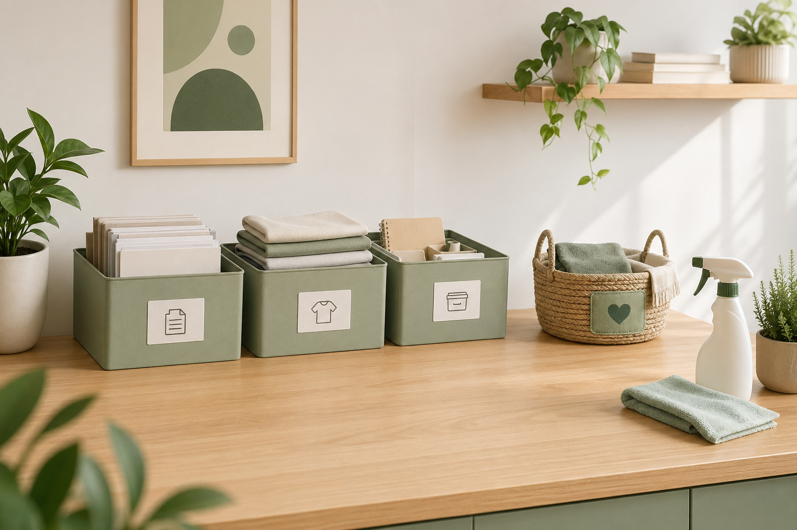
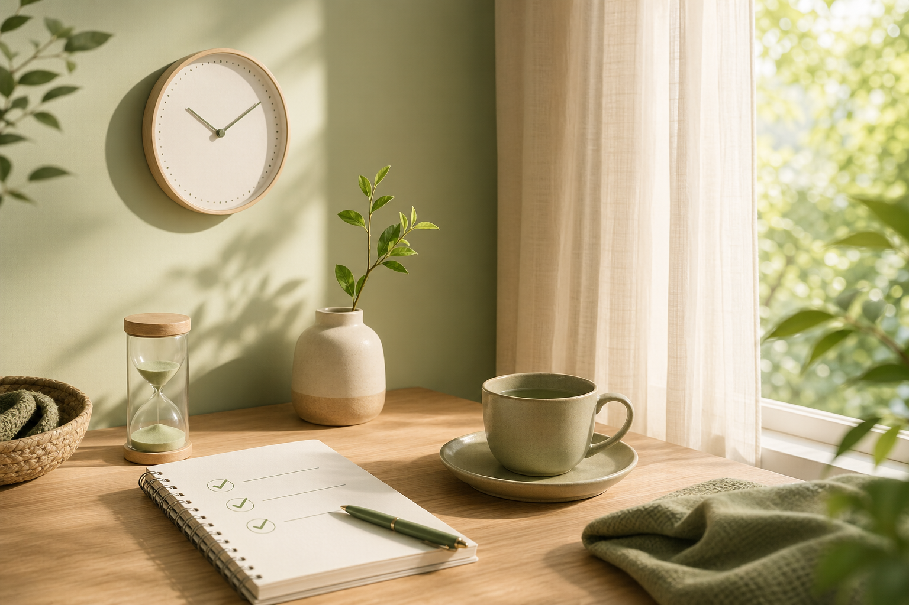
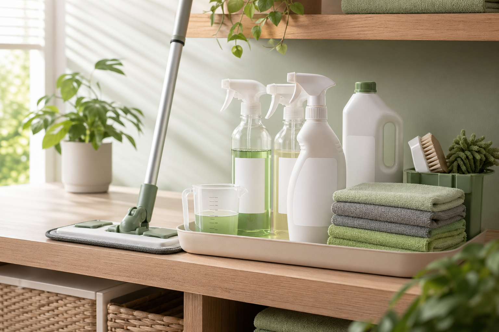

O espaço em que você vive ou trabalha não é só “cenário”. Desordem visual, poeira, cheiros e a sensação de que “sempre falta algo a fazer” podem aumentar a carga mental do dia a dia — enquanto um ambiente mais organizado e higienizado tende a transmitir calma, previsibilidade e até facilitar a concentração. Este texto reúne ideias práticas sobre limpeza, organização e saúde mental, sempre com ton de bem-estar geral: nada aqui substitui acompanhamento médico ou psicológico quando necessário.
Bem-estar, não prescrição
Se você sente sobrecarga constante, fadiga extrema ou sintomas que prejudicam sua rotina, procure um profissional de saúde ou de saúde mental. Limpar e organizar ajudam muita gente, mas não são tratamento clínico.
1. Por que o ambiente “pesa” na mente?

Estudos na área de psicologia ambiental costumam destacar alguns mecanismos que explicam por que bagunça e sujeira incomodam:
- Carga cognitiva: cada objeto fora do lugar ou pilha pendente pede atenção, mesmo que em segundo plano. O cérebro registra isso como “lista de tarefas aberta”.
- Sensação de controle: pequenas vitórias — uma pia limpa, uma gaveta arrumada — reforçam a ideia de que você pode agir sobre o ambiente, o que está ligado a menos ansiedade em muitas pessoas.
- Estímulos sensoriais: maus odores, mofo visível ou pó acumulado podem gerar desconforto físico e associar o lar ou o escritório a algo desagradável, não a um refúgio.
Por isso organizar e higienizar costumam andar juntos: organização reduz ruído visual; limpeza melhora cheiro, textura das superfícies e higiene.
2. Organizar antes de “passar pano em tudo”
Tentar limpar em meio a excesso de objetos gera frustração. Uma ordem que funciona bem:

- Separar o que sai do ambiente: doação, reciclagem ou descarte — sem pensar duas horas em cada item; use caixas “decido depois” só se isso não virar eterno adiamento.
- Destinar lugares fixos: tudo que fica precisa de “endereço” (gaveta, prateleira, caixa rotulada).
- Só então higienizar: com superfícies desobstruídas, a limpeza fica mais rápida e o resultado dura mais.
3. Rotinas pequenas que sustentam a saúde mental
Grandes “mutirões” esgotam e reforçam a ideia de que casa ou empresa são um problema. Prefira micro hábitos:

- Cinco minutos ao acordar ou ao chegar: abrir cortinas, arejar, colocar louça na máquina ou na cuba — um gatilho de “dia encaminhado”.
- Regra do canto: escolher um canto por dia (mesa, banheiro, geladeira) em vez de prometer limpar o imóvel inteiro.
- Fim de expediente no trabalho: três minutos para descartar copos, guardar papéis e passar pano nas bancadas comuns — reduz vergonha na volta no dia seguinte.
O objetivo não é perfeição; é reduzir atrito entre você e o ambiente para que limpeza e organização não virem castigo.
4. Limpeza eficiente reduz estresse prático
Produtos que diluem bem, cheiro aceitável para quem usa o espaço, panos suficientes e um roteiro simples evitam retrabalho. Menos retrabalho significa menos tempo exposto a tarefas desgastantes e menos sensação de “nunca acaba”.

Em empresas, padronizar diluições e horários de faxina (pré-abertura ou pós-horário de pico) evita discussões e surpresas. Em casas, manter um pequeno estoque de itens básicos — detergente neutro, desinfetante adequado às superfícies, esfregões ou mop com refil lavável — evita correr à loja no pior momento.
Na CSV Materiais de Limpeza, você encontra linha profissional com boa relação custo–rendimento para montar esse kit sem exageros: produtos certos diminuem o esforço repetitivo e melhoram o resultado visual e sanitário do espaço.
5. Quando pedir ajuda especializada
Às vezes o bloqueio não é “preguiça”, mas esgotamento, depressão, TDAH não diagnosticado ou outras condições. Se a desorganização é crônica e interfere em relações, trabalho ou autocuidado, busque apoio qualificado. Serviços de organização profissional ou equipes de limpeza também são opções legítimas para desafogar — não é luxo, é gestão de tempo e saúde.
6. Conclusão
Limpeza e organização funcionam como ferramentas de bem-estar: diminuem estímulos desconfortáveis, devolvem sensação de controle e libertam energia mental para o que realmente importa. Comece pequeno, seja consistente e ajuste o que não funcionar — o ambiente é para servir a você, e não o contrário.
Quer montar um kit de limpeza prático para casa ou empresa sem perder tempo com erro de diluição ou produto inadequado? Fale com a equipe CSV e peça uma sugestão enxuta conforme o tamanho do espaço e o tipo de piso.
Materiais que facilitam a rotina
Detergentes, desinfetantes e acessórios profissionais para transformar limpeza em tarefa mais rápida e previsível — residência ou negócio.
Ver Produtos